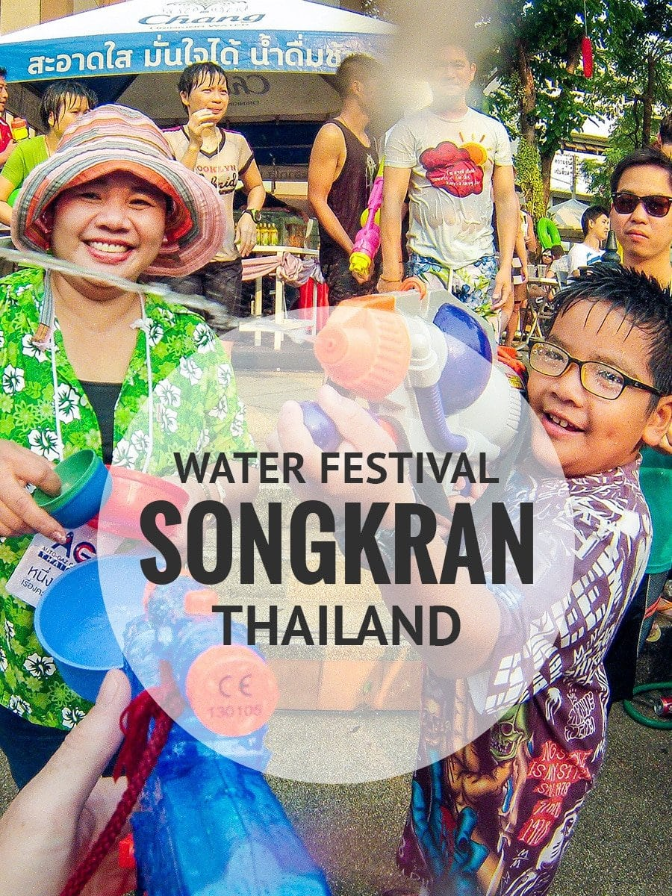
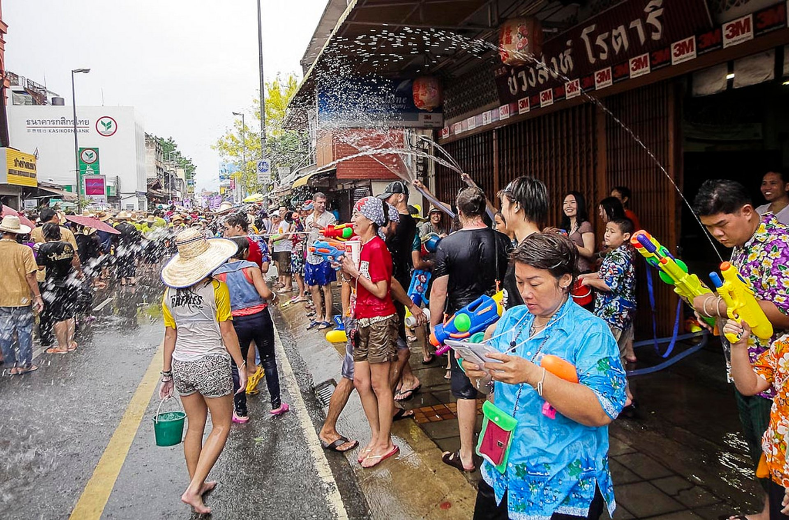

ประเพณีสงกรานต์

พิธีสงกรานต์
เป็นพิธีกรรมที่เกิดขึ้นในสมาชิกในครอบครัว หรือชุมชนบ้านใกล้เรือนเคียง แต่ปัจจุบันได้เปลี่ยนไปสู่สังคมวงกว้าง และมีแนวโน้มที่จะเปลี่ยนทัศนคติและความเชื่อไป
ในความเชื่อดั้งเดิมใช้สัญลักษณ์เป็นองค์ประกอบหลักในพิธี ได้แก่ การใช้น้ำเป็นตัวแทน แก้กันกับความหมายของฤดูร้อน ช่วงเวลาที่พระอาทิตย์เคลื่อนเข้าสู่ราศีเมษ
ใช้น้ำรดให้แก่กันเพื่อความชุ่มชื่น มีการขอพรจากผู้ใหญ่ การรำลึกและกตัญญูต่อบรรพบุรุษที่ล่วงลับ สังคมไทยสมัยใหม่เกิดประเพณีกลับบ้านในเทศกาลสงกรานต์
นับวันสงกรานต์เป็นวันครอบครัว ในพิธีเดิมมีการสรงน้ำพระที่นำสิริมงคล เพื่อให้เป็นการเริ่มต้นปีใหม่ที่มีความสุข ปัจจุบันมีการประชาสัมพันธ์ในเชิงท่องเที่ยวว่าเป็น
Water Festival หรือ เทศกาลแห่งน้ำ

กิจกรรมวันสงกรานต์
- การทำบุญตักบาตรถือว่าเป็นการสร้างบุญสร้างกุศลให้ตัวเอง และ อุทิศส่วนกุศลนั้นแก่ผู้ล่วงลับไปแล้ว การทำบุญแบบนี้มักจะเตรียมไว้ล่วงหน้า นำอาหารไปตักบาตรถวายพระภิกษุที่ศาลาวัด
ซึ่งจัดเป็นที่รวมสำหรับทำบุญ ในวันนี้หลังจากที่ได้ทำบุญเสร็จแล้ว ก็จะมีการก่อพระทรายอันเป็นประเพณีด้วย
-การรดน้ำ เป็นการอวยพรปีใหม่ให้กันและกัน น้ำที่รดมักใช้น้ำหอมเจือด้วยน้ำธรรมดา
-การสรงน้ำพระ จะรดน้ำพระพุทธรูปที่บ้านและที่วัด และบางที่จัดสรงน้ำพระสงฆ์ ด้วย
-บังสุกุลอัฐิ กระดูกญาติผู้ใหญ่ที่ตายแล้ว มักก่อเป็นเจดีย์ แล้วนิมนต์พระไปบังสุกุล
-การรดน้ำผู้ใหญ่ คือการไปอวยพรให้ผู้ใหญ่ที่เคารพนับถือ ครูบาอาจารย์ ท่านผู้ใหญ่มักจะนั่งลงแล้วผู้ที่รดก็จะเอาน้ำหอมเจือกับน้ำรดที่มือท่าน
ท่านจะให้ศีลให้พรผู้ที่ไปรด ถ้าเป็นพระก็จะนำผ้าสบงไปถวายให้ท่านผลัดเปลี่ยนด้วย หากเป็นฆราวาสก็จะหาผ้าถุง ผ้าขาวม้าไปให้
-การดำหัว จุดประสงค์คล้ายกับการรดน้ำทางภาคกลาง พบเห็นได้ทางภาคเหนือ การดำหัวทำเพื่อแสดงเราเคารพนับถือต่อพระ,
ผู้สูงอายุ คือการขอขมาในสิ่งที่ได้ล่วงเกินไปแล้ว หรือ การขอพรปีใหม่จากผู้ใหญ่ ของที่ใช้ในการดำหัวส่วนมากมีอาภรณ์ มะพร้าว กล้วย ส้มป่อยเทียนและดอกไม้
-การปล่อยนกปล่อยปลา ถือเป็นการล้างบาปที่ทำไว้ เป็นการสะเดาะเคราะห์ร้ายให้มีแต่ความสุขความสบายในวันขึ้นปีใหม่
-การนำทรายเข้าวัด ทางภาคเหนือนิยมขนทรายเข้าวัดเพื่อเป็นนิมิตโชคลาภ ให้มีความสุขความเจริญ เงินทองไหลมาเทมาดุจทรายที่ขนเข้าวัด
แต่ก็มีบางที่ เชื่อว่าตลอดปี การนำทรายที่ติดเท้าออกวัด เป็นบาป จึงขนทรายเข้าวัดเพื่อไม่ให้เป็นบาป